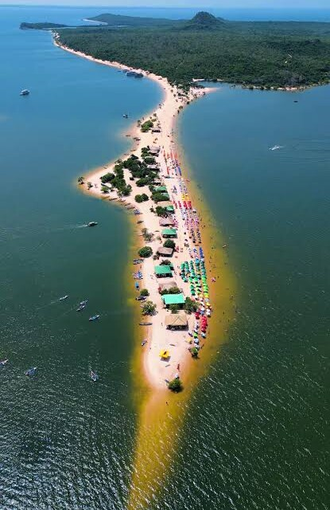
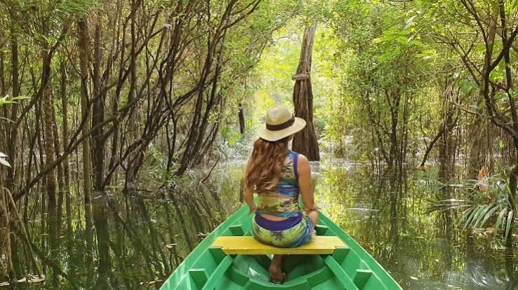
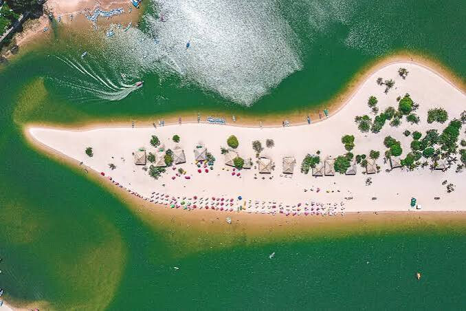
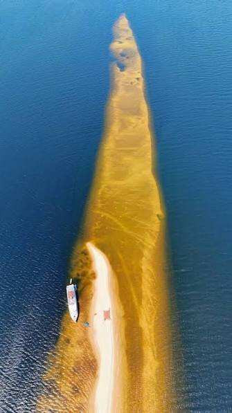
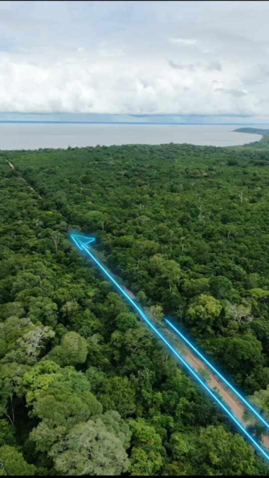

Porto Novo · Mini Chácaras · Estrada Interpraias, Santarém (PA)
Sua mini chácara de 600 a 660 m² na mata, pertinho de Alter do Chão.
Uma rua reta de 800 metros, 102 mini chácaras dos dois lados e floresta em volta. Escolha a sua no mapa e reserve pelo celular em dois minutos.

Ilha do Amor, Alter do ChãoAlter do Chão · Pará
O Caribe amazônico, a poucos minutos da sua mini chácara.
Areia branca, água doce e morna do rio Tapajós e uma vila que recebe visitantes do Brasil inteiro e do exterior. Na época da seca surgem as praias que deram fama ao lugar, como a Ilha do Amor, e na cheia dá para passear de canoa pela Floresta Encantada, um igapó de árvores dentro d’água.



The Guardian · 2009
1º lugar entre as praias mais bonitas do BrasilO jornal britânico chamou Alter do Chão de “Caribe amazônico”.Prêmio UPIS de Turismo · 2021
Melhor Destino Turístico NacionalEleito com 97,55% dos votos, à frente da Chapada Diamantina e do Jalapão.Acesso
34 km do aeroporto de SantarémFácil de chegar de carro a partir do aeroporto.
Entre Alter do Chão e Belterra, com o rio logo ali.
A entrada do loteamento fica na beira da Estrada Interpraias. Você chega de carro comum e está a poucos minutos da areia.
- Porto Novo10 minutos
- Praia de Pindobal15 minutos
- Frente para a estrada6 chácaras
- Áreas verdes e institucionalreservadas na planta
Escolha sua mini chácara
O mapa segue a planta do empreendimento. Toque em uma chácara para ver a medida e reservar.
Trecho 1
Da estrada até 470 m para dentro · chácaras 1 a 32 e 53 a 84
Trecho 2
Continuação da mesma rua, até a área verde · chácaras 33 a 52 e 85 a 103
Medidas conforme a planta do empreendimento, sujeitas a conferência na demarcação. O mapa é um esquema e não está em escala.
Como funciona
Escolha no mapa
Veja a medida, a posição na rua e o valor de cada chácara. São três faixas de preço: R$ 20 mil, R$ 30 mil e R$ 40 mil, conforme a posição.
Reserve e pague o sinal de 5%
Nome e WhatsApp bastam. O sinal é pago por Pix, garante a chácara no seu nome e é descontado do valor total. No pré-lançamento a reserva é gratuita.
Receba o contrato e o contato do corretor
O contrato chega por WhatsApp ou e-mail, junto com o contato do corretor que atendeu você ou de um corretor da equipe.
O terreno hoje
Voo de drone sobre a rua principal do Porto Novo: 800 metros abertos no meio da mata, com as mini chácaras dos dois lados.
Como o loteamento pode ficar
Dúvidas comuns
A reserva me obriga a comprar?
Não. No pré-lançamento a reserva é gratuita e serve para segurar a chácara até a abertura das vendas.
Quando eu pago alguma coisa?
No pré-lançamento, nada. Quando as vendas abrirem, o sinal de 5% do valor da chácara é pago por Pix e confirma a reserva. O sinal é descontado do valor total e o saldo é pago em parcelas fixas de R$ 500, sem reajuste. A documentação do empreendimento fica disponível para você conferir antes de pagar.
Posso visitar antes?
Pode e deve. Depois da reserva, combinamos a visita pelo WhatsApp e mostramos a sua chácara na rua.
O que já existe no local?
A rua principal está aberta e sendo nivelada. O cronograma de energia, água e demarcação das chácaras é informado junto com a documentação.
As casas do vídeo já estão construídas?
Não. O vídeo é uma simulação do que pode ser construído. O que está à venda é a chácara, sem construção.